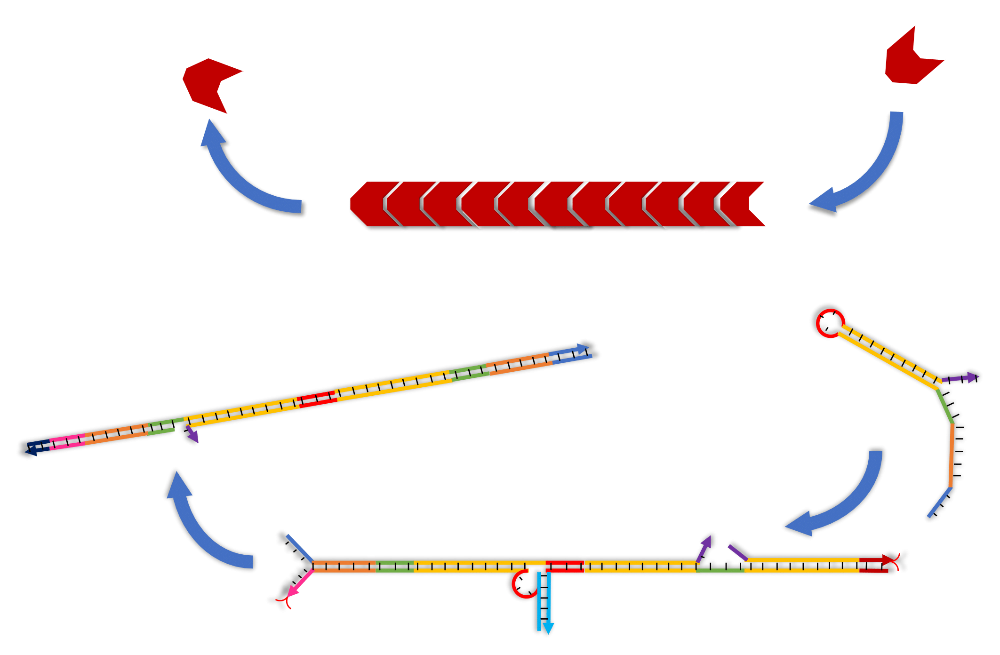

A recent study has succeeded in making 100 times-swelling hydrogel by DNA-crosslinked acrylamide in which the crosslink extends linearly by incorporating DNA hairpins through Hybridization Chain Reaction (HCR).
Although the method achieved an extraordinary swelling rate, the gel cannot shrink.
It just stops swelling when it runs out of DNA hairpins.
Here, we propose a novel design of DNA-linked hydrogel that can not only extend but shrink, like a muscle fiber. In the above swelling gel by HCR, hairpin DNAs are incorporated at one end of linking complex which allows linear elongation of the crosslink. Based on the same design, we add a novel shrinking mechanism which removes DNA from the other end of the complex. We call it “reverse hybridization chain reaction(RHCR)” .
In the future, our DNA hydrogel muscle may contribute to the development of highly designable metamorphic robots.
The existing robotics has developed in the direction of making accurate and predictable
systems consisted by rigid bodies. However, the world of nature frequently performs more
than the rigid robotics can actually do, and recently there has been the trend of soft robotics
inspired by natural world [1].
Most notably, gel is of significant value to tissue engineering or DDS in terms of its
biological compatibility and environmental response such as shrinking and swelling as the
change of external ambient. Therefore, gel is expected to be applied to metamorphic robots
that are so stretchable as human muscles [2]. It is already shown that the swelling of such gel
is effectively feasible by Hybridization Chain Reaction (HCR) which keeps its cross-link
point between gel and DNA, but the shrinking of gel is yet to be accomplished [2].
Here, we have developed a special HCR system named RHCR (Reversible HCR) which
makes it possible to extend or regress when signals added. In the system of RHCR, the
reaction is polar in that one side extends while the other can regress. This behavior is very
similar to the dynamics of actin filaments which is widely used as actuators in the biological
area, and consequently it indicates the capability that RHCR can be a strong actuator in the
soft robotics area.

Actin filament (top) and RHCR (bottom). Both have polarity in polymerization and
depolymerization. This property of actin filaments enable cell to migrate and create
intracellular polarity in living organisms.